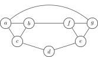
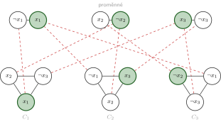
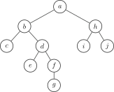
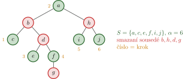

8.7 Úlohy navíc¶
Úlohy procvičují redukci \(\prob{3-SAT}\redp\prob{IS}\) (oddíl 8.1), vztahy mezi nezávislou množinou, vrcholovým pokrytím a klikou (oddíly 8.3 a 8.5) a krátké redukce typu „zobecnění“, „doplnění grafu“ a „přestrojení“ jako ve cvičení 8.6. Poslední úloha ukazuje, kde těžkost IS končí.
Neoficiální úlohy
Úlohy v tomto oddílu nejsou oficiální zadání předmětu. Jsou to procvičovací úlohy navíc k látce kapitoly; všechny redukce byly ověřeny programem hrubou silou (všechny grafy do 6 vrcholů a 600 náhodných grafů se 7 a 8 vrcholy, obě odpovědi ANO i NE), konkrétní čísla a průběhy algoritmů spočítal skript, obecné důkazy jsou psané ručně.
8.7.1 Rozcvička¶
Úloha 8.1 (\(\alpha\), \(\tau\) a \(\omega\) na konkrétním grafu)
Označme \(\alpha(G)\) velikost největší nezávislé množiny, \(\tau(G)\) velikost nejmenšího vrcholového pokrytí a \(\omega(G)\) velikost největší kliky grafu \(G\). Je dán graf \(G\) na obrázku (7 vrcholů, 10 hran).

- Určete \(\alpha(G)\) a dokažte, že větší nezávislá množina neexistuje.
- Určete \(\tau(G)\) a jedno nejmenší vrcholové pokrytí.
- Určete \(\omega(\overline G)\), kde \(\overline G\) je doplněk grafu \(G\).
- Množina \(\{c,f\}\) je nezávislá a nelze do ní přidat žádný další vrchol. Je největší? Co z toho plyne pro „hladový“ postup, který přidává vrcholy, dokud to jde?
Řešení
a) Množina \(S=\{a,d,f\}\) je nezávislá: sousedé \(a\) jsou \(b,c,g\), sousedé \(d\) jsou \(c,e\), sousedé \(f\) jsou \(b,e,g\), takže mezi \(a\), \(d\), \(f\) žádná hrana nevede. Tedy \(\alpha(G)\ge3\).
Horní mez: vrcholy rozdělíme na tři kliky \(\{a,b,c\}\), \(\{e,f,g\}\) a \(\{d\}\) (obě trojice jsou trojúhelníky). Každé dva vrcholy jedné kliky jsou spojeny hranou, proto nezávislá množina obsahuje z každé kliky nejvýše jeden vrchol, celkem nejvýše \(3\). Je to stejný argument „kapacity gadgetů“ jako v redukci Redukce: 3-SAT ≤ₚ IS. Proto \(\alpha(G)=3\). (Skript potvrdil, že největší nezávislé množiny jsou právě dvě: \(\{a,d,f\}\) a \(\{b,d,g\}\).)

Zelená největší nezávislá množina, červené nejmenší vrcholové pokrytí, čárkovaně rozklad na tři kliky, který dává horní mez \(\alpha(G)\le3\).
b) Podle lemmatu 8.5 je \(S\) nezávislá, právě když \(V\setminus S\) je vrcholové pokrytí. Zobrazení \(S\mapsto V\setminus S\) je tedy bijekce mezi nezávislými množinami a vrcholovými pokrytími a součet velikostí je vždy \(n\). Největší \(S\) odpovídá nejmenšímu pokrytí, proto \(\tau(G)=n-\alpha(G)=7-3=4\) a nejmenší pokrytí je \(C=V\setminus\{a,d,f\}=\{b,c,e,g\}\). Kontrola po hranách: \(ab,bc,bf\) pokrývá \(b\); \(ac,cd\) pokrývá \(c\); \(de,ef,eg\) pokrývá \(e\); \(fg,ag\) pokrývá \(g\) – všech 10 hran.
c) Podle lemmatu 8.9 je \(S\) nezávislá v \(G\), právě když je klikou v \(\overline G\). Proto \(\omega(\overline G)=\alpha(G)=3\), například klika \(\{a,d,f\}\) v \(\overline G\).
d) Není. Každý další vrchol sousedí s \(c\) nebo s \(f\) (\(a,b,d\) s \(c\); \(e,g\) s \(f\)), takže \(\{c,f\}\) je maximální vzhledem k inkluzi, ale má jen 2 vrcholy, kdežto \(\alpha(G)=3\). Hladový postup, který začne vrcholy \(c\) a \(f\), skončí s množinou velikosti 2. „Nelze nic přidat“ a „největší“ jsou různé pojmy; nalézt největší nezávislou množinu je NP-těžké, maximální vzhledem k inkluzi najde hladový postup vždy.
Úloha 8.2 (redukce \(\prob{3-SAT}\redp\prob{IS}\) na konkrétní formuli)
Je dána formule
- Sestrojte graf \(G\) a číslo \(k\) podle redukce 3-SAT ≤ₚ IS. Kolik má \(G\) vrcholů a hran?
- Ohodnocení \(x_1=1\), \(x_2=0\), \(x_3=1\) splňuje \(\Phi\). Napište nezávislou množinu velikosti \(k\), kterou z něj sestrojí důkaz implikace (\(\Rightarrow\)). Je jediná?
- Nezávislá množina \(S\) velikosti \(k\) obsahuje v trojúhelnících \(C_1\), \(C_2\), \(C_3\) po řadě vrcholy \(\lnot x_3\), \(x_2\), \(\lnot x_1\). Doplňte zbytek \(S\) a přečtěte z ní splňující ohodnocení.
- Ohodnocení \(x_1=x_2=x_3=1\) formuli nesplňuje. Ukažte přímo v grafu, proč k vrcholům \(x_1,x_2,x_3\) gadgetů proměnných nejde přidat tři vrcholy z trojúhelníků.
Řešení
a) Formule má \(n=3\) proměnné a \(m=3\) klauzule, hledáme tedy nezávislou množinu velikosti \(k=n+m=6\). Vrcholů je \(2n+3m=6+9=15\). Hrany: \(n=3\) hrany gadgetů proměnných, \(3m=9\) hran trojúhelníků a \(3m=9\) konfliktních hran (každý vrchol trojúhelníku je spojen s opačným literálem v gadgetu proměnných), celkem \(21\).

Graf \(G\) pro \(\Phi\): nahoře tři gadgety proměnných, dole tři trojúhelníky klauzulí, červeně čárkovaně konfliktní hrany. Zeleně nezávislá množina velikosti \(6\) z části b).
b) Z gadgetů proměnných vezmeme pravdivé literály: \(x_1\), \(\lnot x_2\), \(x_3\). V každé klauzuli vybereme pravdivý literál: v \(C_1\) je pravdivý jen \(x_1\) (\(x_2=0\), \(\lnot x_3=0\)), v \(C_2\) jen \(x_3\), v \(C_3\) jen \(\lnot x_2\). Množina \(S=\{x_1,\lnot x_2,x_3\}\cup\{x_1\text{ v }C_1,\ x_3\text{ v }C_2,\ \lnot x_2\text{ v }C_3\}\) má 6 vrcholů. Uvnitř gadgetů je z každého jeden vrchol; konfliktní hrana z vybraného \(x_1\) v \(C_1\) vede do \(\lnot x_1\), který vybraný není, a stejně pro \(x_3\) v \(C_2\) (do \(\lnot x_3\)) a \(\lnot x_2\) v \(C_3\) (do \(x_2\)). Množina je tedy nezávislá. Pro toto ohodnocení je jediná: vrcholy proměnných jsou ohodnocením určené a každá klauzule má právě jeden pravdivý literál, takže ani v trojúhelnících není volba.
c) Podle pozorování o kapacitě gadgetů obsahuje nezávislá množina velikosti \(n+m\) přesně jeden vrchol z každé hrany proměnné. Vrchol \(\lnot x_3\) v \(C_1\) je spojen s \(x_3\) v proměnných, takže \(x_3\notin S\) a musí být \(\lnot x_3\in S\). Stejně \(x_2\) v \(C_2\) vylučuje \(\lnot x_2\), tedy \(x_2\in S\), a \(\lnot x_1\) v \(C_3\) vylučuje \(x_1\), tedy \(\lnot x_1\in S\). Doplnění je jednoznačné: \(S=\{\lnot x_1,x_2,\lnot x_3\}\cup\{\lnot x_3\text{ v }C_1,\ x_2\text{ v }C_2,\ \lnot x_1\text{ v }C_3\}\). Ohodnocení je \(x_1=0\), \(x_2=1\), \(x_3=0\). Kontrola: \(C_1\) splní \(\lnot x_3\), \(C_2\) splní \(x_2\), \(C_3\) splní \(\lnot x_1\).
Poznámka. Zpětné čtení není prosté: \(\Phi\) má 5 splňujících ohodnocení, ale \(G\) má 18 nezávislých množin velikosti 6 (spočítáno skriptem). Jednomu ohodnocení odpovídá tolik množin, kolik je součin počtů pravdivých literálů v jednotlivých klauzulích. Pro důkaz to nevadí – stačí, že z každé množiny nějaké ohodnocení přečteme.
d) Jsou-li v \(S\) vrcholy \(x_1,x_2,x_3\) gadgetů proměnných, pak v trojúhelníku \(C_3=(\lnot x_1\lor\lnot x_2\lor\lnot x_3)\) je každý vrchol \(\lnot x_i\) konfliktní hranou spojen s vybraným \(x_i\). Z \(C_3\) proto nelze vybrat nic a z \(C_1\), \(C_2\) nejvýše po jednom vrcholu, celkem nejvýše \(3+2=5<6\). Obecně: nesplněná klauzule je trojúhelník, jehož všechny vrcholy jsou „zablokované“. (Nezávislá množina velikosti 6 v \(G\) existuje, protože \(\Phi\) je splnitelná, ale vybírá v proměnných jiné vrcholy.)
Úloha 8.3 (klika pevné velikosti)
Pro pevné číslo \(k\) (konstantu, která není součástí vstupu) uvažme problém \(\prob{k-Clique}\): je dán graf \(G\) na \(n\) vrcholech; obsahuje \(G\) kliku velikosti \(k\)?
- Ukažte, že pro každé pevné \(k\) je \(\prob{k-Clique}\in\PP\). Odhadněte čas.
- \(\prob{Clique}\) je NP-úplný (důsledek 8.10). Proč část a) nedokazuje \(\PP=\NP\)?
- Pro pevné \(c\): je v \(\PP\) otázka „obsahuje \(G\) kliku velikosti \(n-c\)?“ Porovnejte s problémem \(\prob{Half-Clique}\) ze cvičení 3.3.
- Platí totéž pro \(\prob{IS}\) s pevným \(k\) a pro \(\prob{VC}\) s pevným \(c\)?
Řešení
a) Algoritmus projde všechny \(k\)-prvkové podmnožiny vrcholů a pro každou zkontroluje všech \(\binom k2\) dvojic v matici sousednosti. Podmnožin je \(\binom nk\le n^k\), čas je tedy \(O(n^k\cdot k^2)=O(n^k)\), protože \(k\) je konstanta. Vstup má délku alespoň \(n\), takže pro pevné \(k\) jde o polynomiální algoritmus s exponentem \(k\).
b) V problému \(\prob{Clique}\) je \(k\) součástí vstupu a může růst s \(n\). Exponent \(k\) pak není konstanta: pro \(k=n/2\) je \(\binom n{n/2}\ge 2^n/(n+1)\) podmnožin, tedy exponenciálně mnoho. Pro \(n=100\) (spočítáno skriptem):
| \(k\) | \(\binom{100}{k}\) | poznámka |
|---|---|---|
| \(3\) | \(161\,700\) | okamžitě |
| \(5\) | \(75\,287\,520\) | stále rychle |
| \(50\) | \(\approx1{,}01\cdot10^{29}\) | nereálné |
| \(97\) | \(161\,700\) | \(\binom{100}{97}=\binom{100}{3}\) |
Pro každé \(k\) máme jiný polynomiální algoritmus, ale žádný polynom neomezuje čas pro všechna \(k\) současně. \(\PP=\NP\) by vyžadovalo jeden algoritmus s časem \(O(N^c)\) v délce vstupu \(N\) pro všechny instance \((G,k)\).
c) Ano. \(G\) má kliku velikosti \(n-c\), právě když existuje množina \(R\) s \(c\) vrcholy taková, že \(V\setminus R\) je klika. Množin \(R\) je \(\binom nc\le n^c\) a každou zkontrolujeme v čase \(O(n^2)\), celkem \(O(n^{c+2})\). \(\prob{Half-Clique}\) (klika velikosti \(n/2\)) je přitom NP-úplný: tam roste jak velikost kliky \(k\), tak počet vynechaných vrcholů \(n-k\). Hrubá síla je polynomiální jen na „krajích“, kde je jedno z čísel \(k\), \(n-k\) konstantní.
d) Ano. \(\prob{IS}\) s pevným \(k\): projdeme \(k\)-prvkové podmnožiny a ověříme, že mezi nimi není hrana, \(O(n^k\cdot k^2)\) (nebo hledáme \(k\)-kliku v \(\overline G\)). \(\prob{VC}\) s pevným \(c\): projdeme podmnožiny velikosti nejvýše \(c\) a pro každou zkontrolujeme všech \(m\) hran, \(O(n^c\cdot m)\). Pozor: redukce \(\prob{IS}\redp\prob{VC}\) mění parametr na \(c=n-k\), takže pevné \(k\) nedává pevné \(c\) – výsledky pro pevný parametr se přes tuto redukci nepřenášejí.
(nad rámec přednášky) \(\prob{VC}\) jde pro pevné \(c\) řešit dokonce v čase \(O(2^c\cdot(n+m))\): vezmi libovolnou nepokrytou hranu \(uv\); jeden z jejích konců v pokrytí být musí, zkus tedy rekurzivně obě možnosti „\(u\) do pokrytí“ a „\(v\) do pokrytí“ s rozpočtem \(c-1\). Nezbývá-li nepokrytá hrana, odpověz \(\ANO\); zbývá-li a rozpočet je \(0\), tato větev odpoví \(\NE\). Strom rekurze má hloubku nejvýše \(c\), tedy nejvýše \(2^c\) listů, a exponent u \(n\) už na \(c\) nezávisí. (Ověřeno skriptem proti hrubé síle.)
8.7.2 Na úrovni testu¶
Úloha 8.4 (\(\prob{Set Packing}\))
Problém \(\prob{Set Packing}\) (balení množin):
Vstup: konečné univerzum \(U\), systém podmnožin \(S_1,\dots,S_r\subseteq U\) a číslo \(k\).
Otázka: lze ze systému vybrat \(k\) množin, které jsou po dvou disjunktní?
Dokažte, že \(\prob{Set Packing}\) je NP-úplný. Nápověda: převádějte z problému Independent Set.
Řešení
Redukce: \(\prob{IS} \redp \prob{Set Packing}\), instance \((G,k)\) \(\mapsto\) \((U=V\cup E,\ \{S_v\}_{v\in V},\ k)\), kde \(S_v=\{v\}\cup\{e\in E\mid v\in e\}\).
1. \(\prob{Set Packing}\) je v \(\NP\). Certifikát je \(k\) indexů množin. Ověříme, že jsou navzájem různé (tedy \(k\le r\)), a pro každou dvojici vybraných množin, že je jejich průnik prázdný: \(O(k^2\cdot|U|)\) porovnání.
2. Konstrukce. Pro graf \(G=(V,E)\) s \(n\) vrcholy a \(m\) hranami položíme \(U=V\cup E\) (prvky univerza jsou vrcholy i hrany) a pro každý vrchol \(v\) množinu \(S_v=\{v\}\cup\{e\in E\mid v\in e\}\): vrchol sám a všechny hrany, které z něj vedou. Číslo \(k\) zůstává.

Příklad: v grafu se 4 vrcholy je \(\alpha(G)=2\) (nezávislé jsou \(\{a,c\}\) a \(\{a,d\}\)) a právě tyto dvojice množin jsou disjunktní; žádné tři množiny disjunktní nejsou.
Pozorování. Pro dva různé vrcholy \(u\ne v\) platí: \(S_u\cap S_v=\{uv\}\), je-li \(uv\in E\), a jinak \(S_u\cap S_v=\emptyset\). Vlastní prvky \(u\) a \(v\) jsou různé a hrana \(e\) leží v obou množinách, právě když obsahuje \(u\) i \(v\), tj. \(e=uv\). Tedy \(S_u\) a \(S_v\) jsou disjunktní, právě když \(u\) a \(v\) nejsou sousedé.
3. Polynomialita. \(|U|=n+m\), množin je \(n\) a jejich celková velikost je \(\sum_v(1+\deg v)=n+2m\). Konstrukce je jeden průchod seznamem hran, čas \(O(n+m)\).
4. (\(\Rightarrow\)) Nechť \(S\) je nezávislá množina, \(|S|\ge k\). Vezmeme libovolných \(k\) jejích vrcholů \(v_1,\dots,v_k\) (podmnožina nezávislé množiny je nezávislá). Žádné dva nejsou sousedé, takže podle pozorování jsou množiny \(S_{v_1},\dots,S_{v_k}\) po dvou disjunktní.
5. (\(\Leftarrow\)) Nechť \(S_{v_1},\dots,S_{v_k}\) jsou po dvou disjunktní množiny systému. Jsou to různé množiny systému, tedy \(v_1,\dots,v_k\) jsou různé vrcholy. Podle pozorování mezi žádnými dvěma z nich nevede hrana, takže \(\{v_1,\dots,v_k\}\) je nezávislá množina velikosti \(k\).
6. Závěr. \(\prob{IS}\) je NP-úplný a \(\prob{IS}\redp\prob{Set Packing}\), tedy \(\prob{Set Packing}\) je NP-těžký a podle bodu 1 NP-úplný.
Proč vlastní prvek \(v\) v \(S_v\). Bez něj by izolovaný vrchol dostal prázdnou množinu a dva izolované vrcholy stejnou množinu \(\emptyset\); chápeme-li systém jako množinu množin (bez opakování), splynuly by a počty by nesouhlasily. Prvek \(v\) dělá množiny navzájem různé a neprázdné, přitom průniky nemění. Tytéž množiny hran (bez prvku \(v\)) používá redukce na \(\prob{Set Cover}\) ve cvičení 3.4 (= cvičení 4.1) – tam se ale množiny mají pokrýt, tady se nesmí překrývat.
Úloha 8.5 (\(\prob{Dense Subgraph}\) a \(\prob{Sparse Subgraph}\))
Pro graf \(G=(V,E)\) a \(S\subseteq V\) označme \(G[S]\) indukovaný podgraf: vrcholy \(S\) a všechny hrany \(G\) s oběma konci v \(S\).
\(\prob{Dense Subgraph}\). Vstup: graf \(G\) a čísla \(k\), \(l\). Otázka: existuje \(S\subseteq V\), \(|S|=k\), takové, že \(G[S]\) má alespoň \(l\) hran?
\(\prob{Sparse Subgraph}\). Totéž, ale \(G[S]\) má mít nejvýše \(l\) hran.
- Dokažte, že \(\prob{Dense Subgraph}\) je NP-úplný. Nápověda: převádějte z problému Clique.
- Dokažte, že \(\prob{Sparse Subgraph}\) je NP-úplný. Nápověda: převádějte z problému Independent Set.
Řešení
Redukce: \(\prob{Clique} \redp \prob{Dense Subgraph}\), instance \((G,k)\) \(\mapsto\) \((G,\ k,\ l=k(k-1)/2)\); v části b) \(\prob{IS} \redp \prob{Sparse Subgraph}\), instance \((G,k)\) \(\mapsto\) \((G,\ k,\ l=0)\).
a) 1. V \(\NP\). Certifikát je množina \(S\). Ověříme \(|S|=k\), spočítáme hrany s oběma konci v \(S\) (jeden průchod hranami, \(O(m)\)) a porovnáme s \(l\). Totéž platí pro \(\prob{Sparse Subgraph}\).
2. Konstrukce. Graf i \(k\) ponecháme a položíme \(l=\binom k2=k(k-1)/2\) – počet všech dvojic mezi \(k\) vrcholy.
3. Polynomialita. Graf zkopírujeme, \(l\) spočítáme jedním násobením; binární zápis \(l\) má nejvýše dvojnásobnou délku zápisu \(k\). (Je-li \(k>n\), odpověď je u obou problémů \(\NE\), protože \(k\)-prvková \(S\) neexistuje; zvláštní případ proto není potřeba.)
4. (\(\Rightarrow\)) Je-li \(K\) klika velikosti \(k\), je v \(G[K]\) každá ze \(\binom k2\) dvojic hranou, tedy \(G[K]\) má \(\binom k2\ge l\) hran a \(S=K\) je řešení.
5. (\(\Leftarrow\)) Nechť \(|S|=k\) a \(G[S]\) má alespoň \(\binom k2\) hran. Jednoduchý graf na \(k\) vrcholech má nejvýše \(\binom k2\) hran, takže jich má přesně \(\binom k2\) a každá dvojice vrcholů z \(S\) je hranou: \(S\) je klika velikosti \(k\).
6. Závěr. \(\prob{Clique}\) je NP-úplný, takže \(\prob{Dense Subgraph}\) je NP-těžký a podle bodu 1 NP-úplný. (Je to zobecnění: klika je speciální případ s \(l=\binom k2\).)
b) Konstrukce. \((G,k)\mapsto(G,k,0)\), zřejmě polynomiální. Členství v \(\NP\) jako v a).
(\(\Rightarrow\)) Nechť \(S\) je nezávislá, \(|S|\ge k\). Libovolná \(k\)-prvková podmnožina \(S'\subseteq S\) je také nezávislá, takže \(G[S']\) má \(0\le l\) hran. (Tady je potřeba přechod z „\(\ge k\)“ v IS na „přesně \(k\)“.)
(\(\Leftarrow\)) Nechť \(|S|=k\) a \(G[S]\) má nejvýše \(0\) hran. Pak mezi vrcholy \(S\) nevede žádná hrana a \(S\) je nezávislá množina velikosti \(k\).
Závěr. \(\prob{IS}\redp\prob{Sparse Subgraph}\), problém je v \(\NP\), tedy je NP-úplný.
Poznámka. Oba problémy jsou jeden a týž „přes doplněk“: \(G[S]\) má nejvýše \(l\) hran, právě když \(\overline G[S]\) má alespoň \(\binom k2-l\) hran (každá dvojice z \(S\) je hranou právě v jednom z grafů \(G\), \(\overline G\)). Je to stejný trik jako \(\prob{IS}\redp\prob{Clique}\) v oddílu 8.5. Ekvivalence je ověřena skriptem na všech grafech do 6 vrcholů.
Úloha 8.6 (monotónní 2-SAT s nejvýše \(k\) jedničkami)
Problém \(\prob{Min-Ones Monotone 2-SAT}\):
Vstup: formule \(\varphi\) v KNF nad proměnnými \(y_1,\dots,y_N\), v níž má každá klauzule tvar \((y_i\lor y_j)\) pro dvě různé proměnné (žádné negace), a číslo \(k\).
Otázka: existuje ohodnocení splňující \(\varphi\), v němž je nejvýše \(k\) proměnných rovno \(1\)?
- Dokažte, že problém je NP-úplný. Nápověda: převádějte z problému Vertex Cover.
- \(\prob{2-SAT}\) je v \(\PP\) (oddíl 12.5). Proč to není ve sporu s a)?
Řešení
Redukce: \(\prob{VC} \redp \prob{Min-Ones Monotone 2-SAT}\), instance \((G,c)\) \(\mapsto\) \(\bigl(\varphi_G=\bigwedge_{uv\in E}(y_u\lor y_v),\ k=c\bigr)\).
1. V \(\NP\). Certifikát je ohodnocení (\(N\) bitů). Dosadíme do všech klauzulí a spočítáme jedničky, lineárně v délce formule.
2. Konstrukce. Pro graf \(G=(V,E)\) a číslo \(c\) zavedeme proměnnou \(y_v\) za každý vrchol \(v\) a klauzuli \((y_u\lor y_v)\) za každou hranu \(uv\). Položíme \(k=c\).

Hrana = klauzule, vrchol v pokrytí = proměnná s hodnotou \(1\). Nejmenší pokrytí má 2 vrcholy (\(\{a,c\}\) nebo \(\{b,c\}\)), a právě tolik jedniček potřebuje nejlepší splňující ohodnocení.
3. Polynomialita. \(N=n\) proměnných a \(m\) klauzulí po dvou literálech; čas \(O(n+m)\).
Pozorování. Ohodnocení \(\sigma\) a množina \(C_\sigma=\{v\mid\sigma(y_v)=1\}\) si vzájemně jednoznačně odpovídají. Klauzule \((y_u\lor y_v)\) je splněná, právě když \(u\in C_\sigma\) nebo \(v\in C_\sigma\), tj. když \(C_\sigma\) pokrývá hranu \(uv\). Tedy \(\sigma\) splňuje \(\varphi_G\), právě když \(C_\sigma\) je vrcholové pokrytí, a počet jedniček v \(\sigma\) je \(|C_\sigma|\).
4. (\(\Rightarrow\)) Nechť \(C\) je vrcholové pokrytí, \(|C|\le c\). Ohodnocení \(\sigma(y_v)=1\iff v\in C\) splňuje každou klauzuli (každá hrana má konec v \(C\)) a má \(|C|\le c=k\) jedniček.
5. (\(\Leftarrow\)) Nechť \(\sigma\) splňuje \(\varphi_G\) a má nejvýše \(k\) jedniček. Podle pozorování je \(C_\sigma\) vrcholové pokrytí velikosti nejvýše \(k=c\).
6. Závěr. \(\prob{VC}\) je NP-úplný, tedy \(\prob{Min-Ones Monotone 2-SAT}\) je NP-těžký a podle bodu 1 NP-úplný.
b) \(\prob{2-SAT}\) se ptá jen na splnitelnost. Monotónní formule je splnitelná vždy (všechny proměnné rovny \(1\)), bez omezení počtu jedniček je problém triviální. Těžkost přináší jen podmínka „nejvýše \(k\) jedniček“, a ta není klauzulí o dvou literálech – algoritmus pro \(\prob{2-SAT}\) přes implikační graf ji neumí vyjádřit. Problém je ve skutečnosti jen \(\prob{VC}\) v přestrojení: opačný směr (klauzule \(\mapsto\) hrana) je stejně snadný.
Úloha 8.7 (klika i nezávislá množina zároveň)
Problém \(\prob{Clique and IS}\):
Vstup: graf \(G\) a číslo \(k\) (binárně).
Otázka: obsahuje \(G\) kliku velikosti \(k\) a zároveň nezávislou množinu velikosti \(k\)?
Dokažte, že problém je NP-úplný. Nápověda: převádějte z problému Clique.
Řešení
Redukce: \(\prob{Clique} \redp \prob{Clique and IS}\), instance \((G,k)\) \(\mapsto\) \((G',k)\), kde \(G'\) vznikne z \(G\) přidáním \(k\) nových izolovaných vrcholů.
1. V \(\NP\). Certifikát jsou dvě množiny \(K\) a \(S\) po \(k\) vrcholech. Ověříme, že každá dvojice v \(K\) je hranou a žádná dvojice v \(S\) hranou není: \(O(k^2)\) dotazů do matice sousednosti, přičemž \(k\le n\) (jinak certifikát neexistuje).
2. Konstrukce. Nechť \(G\) má \(n\) vrcholů.
- \(k\le1\): \(\prob{Clique}\) odpovídá \(\ANO\) (pro \(k\le0\) vždy, pro \(k=1\), má-li \(G\) aspoň jeden vrchol). Vypíšeme pevnou ANO-instanci \((K_1,1)\), resp. pevnou NE-instanci \((K_1,2)\), je-li \(k=1\) a \(G\) nemá žádný vrchol.
- \(k>n\): klika velikosti \(k\) v \(G\) není, vypíšeme pevnou NE-instanci \((K_1,2)\) (jeden vrchol nemá dva různé vrcholy).
- \(2\le k\le n\): \(G'=G\) plus \(k\) nových vrcholů \(w_1,\dots,w_k\) bez hran, parametr \(k\) stejný.

Proč nestačí identita. Klika v \(G\) nezaručuje nezávislou množinu stejné velikosti: \(K_3\) s \(k=3\) má kliku, ale nezávislou množinu velikosti 3 ne. Přidané vrcholy zajistí nezávislou množinu vždy, takže odpověď závisí jen na klice.
3. Polynomialita. V hlavním případě je \(k\le n\), takže \(G'\) má nejvýše \(2n\) vrcholů a stejné hrany jako \(G\). Případ \(k>n\) je oddělený záměrně: \(k\) je zapsané binárně a přidání \(k\) vrcholů by jinak bylo exponenciální v délce vstupu (stejně jako u \(H=K_k\) ve cvičení 3.2).
4. (\(\Rightarrow\)) Nechť \(K\) je klika velikosti \(k\) v \(G\) (hlavní případ). Hrany mezi vrcholy \(G\) se nezměnily, takže \(K\) je klika i v \(G'\). Množina \(\{w_1,\dots,w_k\}\) je nezávislá, protože z nových vrcholů žádná hrana nevede. \(G'\) tedy obsahuje obojí.
5. (\(\Leftarrow\)) Nechť \(G'\) obsahuje kliku \(K'\) velikosti \(k\ge2\) (a nezávislou množinu, tu nepotřebujeme). V klice s aspoň dvěma vrcholy má každý vrchol souseda, ale \(w_i\) nemá žádného; proto \(K'\subseteq V(G)\), a protože hrany \(G'\) mezi vrcholy \(G\) jsou přesně hrany \(G\), je \(K'\) klika velikosti \(k\) v \(G\). Pevné instance odpovídají správně: \((K_1,1)\) má kliku i nezávislou množinu \(\{v\}\), \((K_1,2)\) nemá ani jednu.
6. Závěr. \(\prob{Clique}\) je NP-úplný, tedy \(\prob{Clique and IS}\) je NP-těžký a podle bodu 1 NP-úplný.
Pozor na zrcadlovou variantu. Při redukci z \(\prob{IS}\) nestačí přidat oddělenou kliku \(K_k\): nezávislá množina by mohla vzít jeden vrchol z \(K_k\) a jen \(k-1\) vrcholů z \(G\). Protipříklad: \(G=K_2\) (jedna hrana), \(k=2\) – v \(G\) nezávislá množina velikosti 2 není, ale \(G\cup K_2\) má kliku velikosti 2 i nezávislou množinu velikosti 2 (po jednom vrcholu z každé hrany). Kliku \(K_k\) je nutné spojit hranami se všemi vrcholy \(G\) – to je přesně doplněk konstrukce výše.
8.7.3 Těžší úlohy¶
Úloha 8.8 (nezávislá množina v lese a v grafu stupně nejvýše 2)
- Navrhněte polynomiální algoritmus, který v lese (grafu bez kružnic) najde největší nezávislou množinu, a dokažte jeho správnost. Plyne z toho, že \(\prob{IS}\) omezený na lesy je v \(\PP\).
- Spusťte algoritmus na stromu na obrázku.
- Určete \(\alpha(G)\) pro graf \(G\), v němž má každý vrchol stupeň nejvýše \(2\).
- Proč to není ve sporu s NP-úplností \(\prob{IS}\)?

Řešení
Lemma. Nechť \(\ell\) je vrchol stupně nejvýše 1 v libovolném grafu \(G\). Pak existuje největší nezávislá množina, která obsahuje \(\ell\).
Důkaz lemmatu. Vezměme největší nezávislou množinu \(S^*\); pokud \(\ell\in S^*\), jsme hotovi. Je-li \(\ell\) izolovaný, je \(S^*\cup\{\ell\}\) nezávislá a větší – spor, tedy \(\ell\in S^*\). Má-li \(\ell\) jediného souseda \(p\): kdyby \(p\notin S^*\), byla by \(S^*\cup\{\ell\}\) nezávislá a větší, spor; tedy \(p\in S^*\). Pak \(S'=(S^*\setminus\{p\})\cup\{\ell\}\) je nezávislá (jediný soused \(\ell\) v ní není) a stejně velká, tedy největší a obsahuje \(\ell\).
Důsledek. Označme \(N[\ell]\) vrchol \(\ell\) s jeho sousedem (je-li). Pak \(\alpha(G)=1+\alpha(G-N[\ell])\). (\(\ge\)): k nezávislé množině grafu \(G-N[\ell]\) lze přidat \(\ell\), protože \(\ell\) nemá v \(G-N[\ell]\) sousedy. (\(\le\)): podle lemmatu vezmeme největší \(S\ni\ell\); množina \(S\setminus\{\ell\}\) neobsahuje souseda \(\ell\), je to tedy nezávislá množina v \(G-N[\ell]\) velikosti \(\alpha(G)-1\).
a) Algoritmus. \(S:=\emptyset\). Dokud les \(F\) není prázdný: najdi v aktuálním \(F\) vrchol \(\ell\) stupně nejvýše 1, přidej ho do \(S\) a smaž z \(F\) vrchol \(\ell\) i jeho souseda. Vrať \(S\).
Správnost. Neprázdný les vždy má vrchol stupně nejvýše 1: buď izolovaný vrchol, nebo list stromu s aspoň dvěma vrcholy (konec nejdelší cesty nemá jiného souseda, jinak by cesta šla prodloužit nebo by vznikla kružnice). Smazáním vrcholů z lesa vznikne zase les, takže krok jde provést v každém kole. Množina \(S\) je nezávislá: přidaný \(\ell\) nemá v aktuálním grafu žádného souseda kromě smazaného, a všechny později přidané vrcholy leží v aktuálním grafu. Optimalita indukcí podle počtu vrcholů z důsledku: \(|S|=1+\alpha(F-N[\ell])=\alpha(F)\).
Čas. Nejvýše \(n\) kol, v každém najdeme vrchol stupně nejvýše 1 a přepočítáme stupně sousedů v čase \(O(n)\); celkem \(O(n^2)\) (s frontou listů i \(O(n+m)\)). Rozhodovací otázku „\(\alpha(F)\ge k\)?“ zodpovíme porovnáním \(|S|\) s \(k\). Algoritmus byl ověřen skriptem proti hrubé síle na všech stromech do 8 vrcholů (přes 280 tisíc stromů) a na 2000 náhodných lesích do 12 vrcholů.
b) Bereme vždy abecedně první vrchol stupně nejvýše 1 v aktuálním grafu:
| krok | přidán do \(S\) | smazán soused | poznámka |
|---|---|---|---|
| 1 | \(c\) | \(b\) | \(c\) je list |
| 2 | \(a\) | \(h\) | po smazání \(b\) je \(a\) list |
| 3 | \(e\) | \(d\) | \(f\) má teď jediného souseda \(g\) |
| 4 | \(f\) | \(g\) | |
| 5 | \(i\) | – | izolovaný (soused \(h\) smazán) |
| 6 | \(j\) | – | izolovaný |

Výsledek \(S=\{a,c,e,f,i,j\}\), \(\alpha(T)=6\) (hrubá síla potvrdila, že větší nezávislá množina není; největší jsou tři, např. i \(\{a,c,d,g,i,j\}\)).
c) Komponenta souvislosti grafu se stupni nejvýše 2 je izolovaný vrchol, cesta \(P_r\) s \(r\) vrcholy, nebo kružnice \(C_r\) (\(r\ge3\)). Nezávislé množiny komponent se dají libovolně sjednotit (mezi komponentami nejsou hrany), proto \(\alpha(G)\) je součet přes komponenty.
- Cesta: \(\alpha(P_r)=\lceil r/2\rceil\). Dolní mez: vezmeme 1., 3., 5., … vrchol. Horní mez: vrcholy rozdělíme na dvojice \(\{1,2\},\{3,4\},\dots\) (při lichém \(r\) zbude jeden vrchol); dvojice je hrana, takže z každé části je v nezávislé množině nejvýše jeden vrchol, a částí je \(\lceil r/2\rceil\). Izolovaný vrchol je \(P_1\).
- Kružnice: \(\alpha(C_r)=\lfloor r/2\rfloor\). Dolní mez: po vynechání jednoho vrcholu zbude cesta \(P_{r-1}\) s \(\lceil(r-1)/2\rceil=\lfloor r/2\rfloor\). Horní mez: každý vrchol nezávislé množiny \(S\) má na kružnici 2 hrany a žádná hrana nemá oba konce v \(S\), takže tyto hrany jsou pro různé vrcholy různé: \(2|S|\le r\).
Komponenty najdeme prohledáním grafu, celkem čas \(O(n+m)\). (Vzorce ověřeny skriptem pro \(r\le12\) a na 500 náhodných grafech se stupni nejvýše 2.)
d) NP-úplnost \(\prob{IS}\) mluví o všech grafech; omezení vstupu na speciální třídu může problém zjednodušit, stejně jako \(\prob{2-SAT}\) je snadný, zatímco \(\prob{3-SAT}\) těžký. Redukce \(\prob{3-SAT}\redp\prob{IS}\) vyrábí grafy s trojúhelníky (tedy s kružnicemi) a vrcholy klauzulí mají stupeň aspoň 3 (dvě hrany trojúhelníku a konfliktní hrana) – do lesů ani do grafů stupně 2 se nevejde. Kdyby existovala polynomiální redukce \(\prob{3-SAT}\) na \(\prob{IS}\) v lesích, platilo by \(\PP=\NP\). (nad rámec přednášky) Bez důkazu uvádíme známý výsledek: \(\prob{IS}\) zůstává NP-úplný už pro grafy s maximálním stupněm 3. Hranice mezi snadným a těžkým (za předpokladu \(\PP\ne\NP\)) je tedy mezi stupněm 2 a 3.